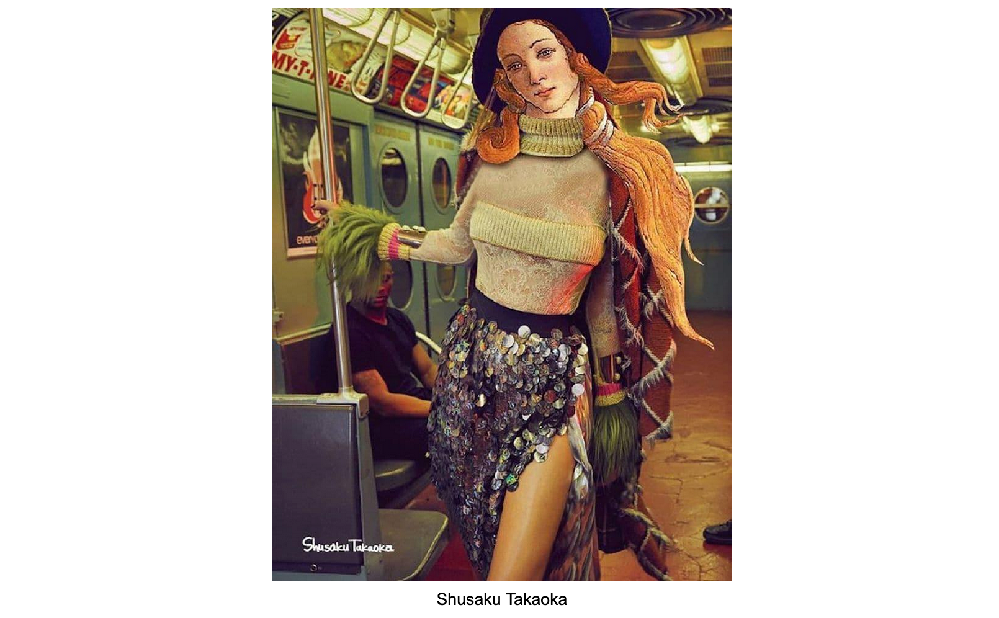

Photo-Painting Assignment

Requirements
- width: 3000 px
- height: 2000 px
- Format: JPG
Instructions
- Combine a famous painting and a photograph to create a blended image.
- The image must use the following techniques:
- Two or more raster images
- Layer masking
- Make it look “realistic” by adjusting brightness and contrast.
- Blend modes (optional)
- Export as JPG. Rename the file with your name.
- Submit to Canvas.
If you don't have Canvas, please send it to Professor L. at cheungl@laccd.edu
and include "ART 250 photo-painting" as the subject title.
Free-to-use images
Photography: unsplash.com
Paintings: Met Museum Gallery / National Gallery of Art